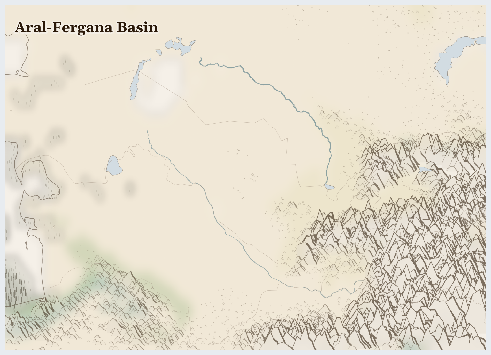

Aral-Fergana Basin
Tajikistan, Turkmenistan, Uzbekistan and 2 more countries
Palearctic
This is the dry heart of Central Asia — steppe and desert under a huge sky, ringed by snowy mountains. Between the mountains lie green valleys so fertile that traders on the old Silk Road called them a garden in the desert.
How Life Works Here
Snow melts off the mountains and runs in two great rivers across the flat land. People use that water to grow cotton — fields and fields of it — which becomes clothes and bedsheets around the world. Melons, apricots, and mulberries grow sweet in the valley sun.
Smallholder cotton farmers (formerly state-mobilised harvest labour), Textile workers in Uzbek processing zones.
Uzbek and Kazakh downstream irrigators, Kyrgyz and Tajik upstream hydropower operators, Karakalpak communities on Aral remnant.
Kazakh oil workers (Zhanaozen, Atyrau), Chevron, Shell, ExxonMobil (Tengiz consortium) in Kazakhstan.
What Is Happening
This place holds one of the world's biggest lessons. There used to be an enormous lake here called the Aral Sea — so big it had fishing ports and beaches. But so much river water was taken to grow cotton that the lake dried up, and rusty ships now sit in a desert where the waves used to be. It is very sad. But here is the hopeful part: people built a dam and brought part of the lake back — the water returned, and so did the fish and the fishing boats. What people broke, people are mending.
Something Wonderful
There are ships — real fishing boats — sitting on dry sand many miles from any water, because the sea that floated them disappeared. And in the north, where people brought the water back, birds and fish have returned to a place everyone thought was lost forever.
Let's Do Something Together
Cloud Watching for Rain
Lie on your back and watch the clouds. Big puffy clouds might bring rain! Thin wispy clouds usually mean dry weather. In places where it has not rained for a long time, families watch the sky every day and hope for clouds. Imagine waiting and waiting for rain that does not come.
- blanket for lying on
- sky with clouds
For grown-ups
Prolonged drought triggers cascading crises — crop failure, livestock death, water scarcity, displacement. Communities develop sophisticated indigenous weather knowledge that climate change is now invalidating.
Let Us Pray Together
God, send the rain. Be with families who are waiting and hoping.
Leader: We pray for Turkmenistan. Especially for Turkmenistan, facing the most severe convergence of crises in this region.
All: Lord, hear our prayer.
Leader: We pray for the helpers. For humanitarian workers and missionaries in Aral-Fergana Basin.
All: Lord, hear our prayer.
Leader: We pray for seeds of hope. For every act of resistance and care in Aral-Fergana Basin.
All: Lord, hear our prayer.
His foundation is on the holy mountains. The Lord loves the gates of Zion more than all the dwellings of Jacob. Glorious things are spoken of you, Zion, city of our God.
Collect
O God, you declare your almighty power most chiefly in showing mercy and pity: mercifully grant to us such a measure of your grace, that we, running the way of your commandments, may receive your gracious promises, and be made partakers of your heavenly treasure; through Jesus Christ your Son our Lord, who is alive and reigns with you, in the unity of the Holy Spirit, one God, now and for ever.
Amen.
Talk About It
The people here used too much water and lost their lake — then worked hard to bring some back. Is there something you use a lot of that you could be more careful with, so there's enough to share?
One Thing We Can Do
Turn the tap off while you brush your teeth tonight. As the water stops, remember the Aral Sea — and be glad that broken things can sometimes be mended.